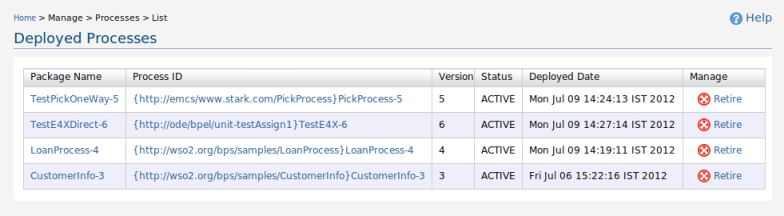
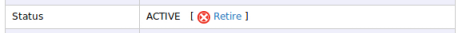
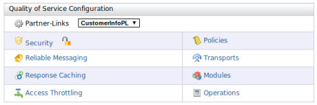
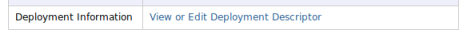
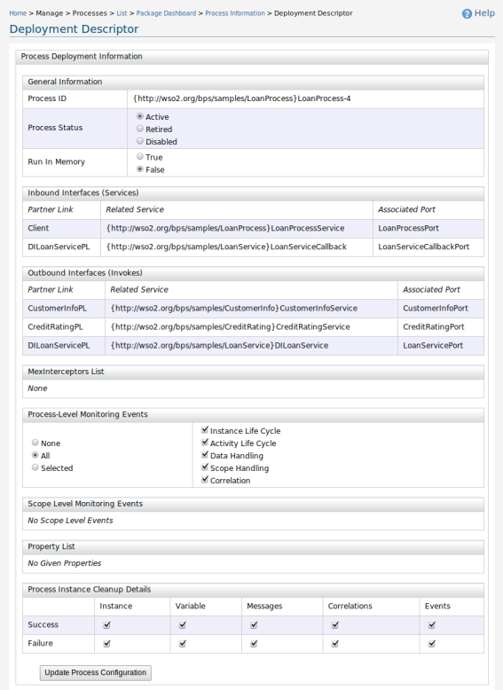
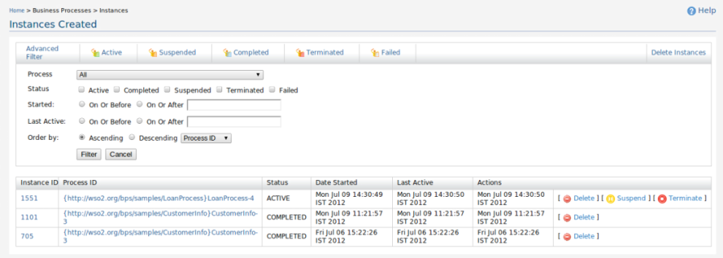
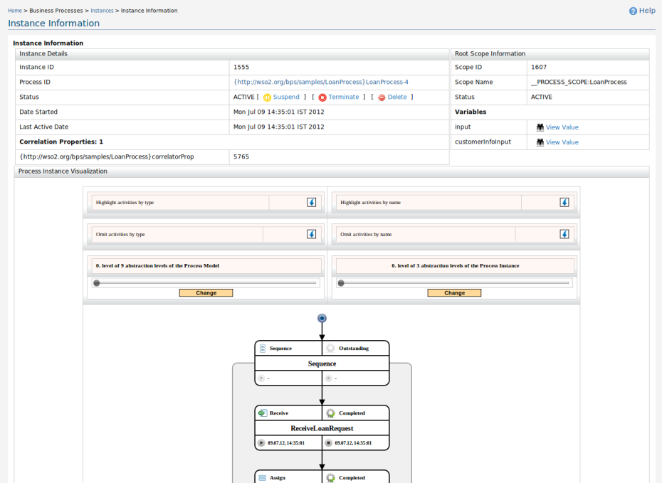

WSO2 Business Process component adds the capability to execute business processes written using WS-BPEL standard in WSO2 SOA platform. It also provides a complete web based graphical console to deploy, manage and view processes and process instances. WSO2 Business Process component is powered by Apache ODE(Orchestration Director Engine).
WS-BPEL defines a language for the specification of Executable and Abstract business processes. By doing so, it extends the Web Services interaction model and enables it to support business transactions. WS-BPEL defines an interoperable integration model that should facilitate the expansion of automated process integration in both the intra-corporate and the business-to-business spaces. Processes in WS-BPEL export and import functionality by using Web Service interfaces exclusively.
In the management console, under Processes click List. The Processes page will appear.
Process list will display IDs of the deployed processes with their version, status, deployed date and the package they are contained in. With this list you can retire and activate processes. You can view detailed description about the process, when you click the process id link. By clicking the Package Name, you can view details, undeploy or download the package.
Active processes can be invoked by partners and as a result, new process instances will be created. When a process is retired all the running instances of that particular process will behave normally. But no new instances will be created from retired processes.
In the management console, click List under Processes. Then click on any of the process ID links. It will display a detailed description about the process including version, status, deployed date, container package of that process, total instance, instance summary, syntax highlighted process definition and process visualization.
Using the link display in front of the Status of the process users can activate or retire that process.
Under Quality of Service Configuration, you can configure QoS for each partner-link used in the business process.
Under WSDL details, you create instances for the provided partner links and view their WSDLs.

You can go to Deployment Descriptor Editor by clicking the link View or Edit Deployment Descriptor on any of the detailed process description pages.
This editor allows BPEL process administrators to configure process/instance/scope event generation, instance cleanup at run-time. Also it provides the other configuration details like MEX interceptors, process properties, provided services (inbound interfaces) and invoked partner services (outbound interfaces).
When you click Instances under Business Processes, Instances page will appear. This page will display paginated list of currently available process instances in the system.
The instance list will display ID of the instance with the process id of that instance, current status, date started, last active date and actions that can be performed on that instance. Users can click on the instance id link to go to the detailed view of that instance and use process id link to view the details of the process. Users can use Suspend/Resume, Terminate and Delete links to suspend/resume active instance, terminate active instance and to delete instance from the system. Complete and Terminated instances can only be deleted and can't perform any other actions on it.
User can filter the available instances according to their status. Advance Filter link will expand the filter from and users can use that to filter the instance list according to process name, process namespace, started date and etc.. If the user want to reset the filter and list all the available instances user can use either 'All' shortcut link or 'Reset Filter' link.
Advance Filter link will expand the filter form and user can use it to narrow down the instance list.
When a user clicks on instance id link at the 'Instances Created' page, instance details page for the instance represented by that ID will appear.
Instance details page will display information like process id of that instance, status, last active date and event information, scope information, variable values and activity-event information of that instance. It will also include process instance details visualization with different abstraction levels
BPEL package is a ZIP archived directory with all the relevant deployment artifacts. Minimal BPEL package contains the deployment descriptor, one or more process definitions(.bpel or .cbp), WSDL and XSDs(excluding the ones compiled into .cbp). The deployment descriptor is a file named deploy.xml. To deploy, just copy the BPEL package containing your artifacts to the %CARBON_HOME%/repository/deployment/server/bpel directory. If you are using a URL repository copy the package to 'bpel' directory in that repository.